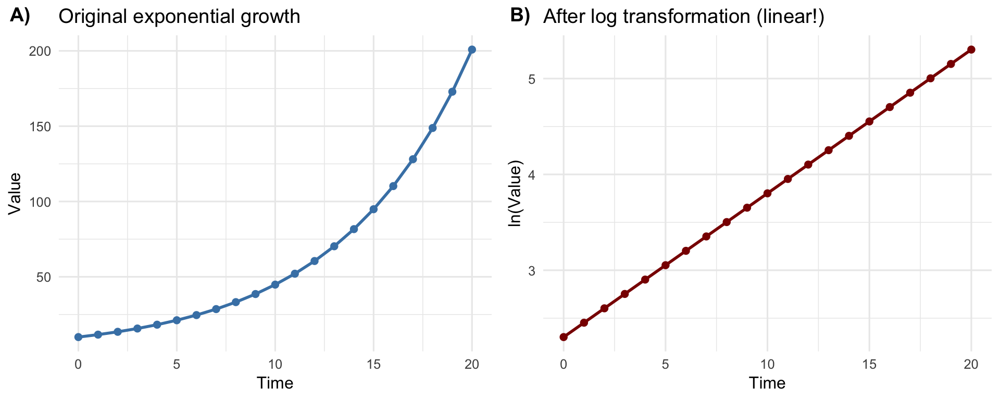

R Packages
library(tibble)
library(ggplot2)
library(moderndive)
library(ggpubr)
library(kableExtra)library(tibble)
library(ggplot2)
library(moderndive)
library(ggpubr)
library(kableExtra)A logarithm is simply a way of asking: “To what power must I raise one number to get another number?”
For example, if we ask “what is the logarithm of 100 in base 10?”, we’re really asking: “10 raised to what power gives us 100?” The answer is 2, because \(10^2=100\).
We write this as:
\[\log_{10}\left(100\right)=2\]
We say this out loud as: “log base 10 of 100 equals 2”
The base of a logarithm is the number we’re repeatedly multiplying. In \(\log_{10}\left(100\right)=2\), the base is \(10\). This tells us “10 multiplied by itself 2 times equals 100.”
Different bases are useful in different contexts:
Convention: When someone writes \(\log\left(x\right)\) without specifying a base, they usually mean the natural logarithm (base e) in statistics, although \(\ln\) would be more correct. This is particularly confusing as in many other fields it might also mean the base 10.
Computing logs in R is pretty straightforward:
log10(100) # Base 10: "log base 10 of 100"
log2(8) # Base 2: "log base 2 of 8" (2^3 = 8, so answer is 3)
log(100) # Natural log (base e): "natural log of 100" or "ln of 100"From the definition of the log the following special cases also follow naturally:
log(0)[1] -Infand
log(-1) # negative logs are not defined.[1] NaNImagine you’re analyzing company growth rates:
The most common logarithm you’ll encounter in statistics is the natural logarithm (written as “ln” or “log”), which uses a special number called e (approximately 2.718) as its base. Don’t worry too much about e for now—just know that natural logarithms are the standard in statistical analysis.
# In R, the natural logarithm is simply log():
log(100)[1] 4.60517# The number e in R:
exp(1)[1] 2.718282Banks use continuous compounding, which naturally involves e. If you invest 1,000 EUR at 5% annual interest compounded continuously:
Taking the natural logarithm lets you easily work backwards: if your investment grew to EUR 2,000, you can find how long it took by calculating ln(2000/1000) ÷ 0.05 = 13.86 years.
The natural logarithm and the exponential function \(e^x\) are mathematical inverses—they undo each other. If you apply one and then the other, you get back to where you started:
# Demonstrating that log and exp undo each other:
x <- 5
log(exp(x)) # Should give us 5[1] 5exp(log(x)) # Should also give us 5[1] 5This relationship is particularly useful because many real-world processes follow exponential patterns. When something grows exponentially, it increases by a constant percentage over time (like compound interest or viral marketing reach). The exponential function captures this: if you invest 1,000 EUR at 5% annual interest, after t years you have \(1000 \times e^{\left(0.05t\right)}\) EUR.
By taking the natural logarithm of exponentially growing data, we transform that curved, accelerating relationship into a straight line, as shown in Figure 1. This is why this kind of transformation is particularly helpful in the context of linear regression.
# Generate exponential data
time <- 0:20
value <- 10 * exp(0.15 * time)
# Create data frame
df <- data.frame(time = time, value = value, log_value = log(value))
# Plot 1: Original exponential relationship
p1 <- ggplot(df, aes(x = time, y = value)) +
geom_point(size = 2, color = "steelblue") +
geom_line(color = "steelblue", linewidth = 1) +
labs(title = "Original exponential growth",
x = "Time",
y = "Value") +
theme_minimal(base_size = 12)
# Plot 2: Log-transformed relationship (now linear)
p2 <- ggplot(df, aes(x = time, y = log_value)) +
geom_point(size = 2, color = "darkred") +
geom_line(color = "darkred", linewidth = 1) +
labs(title = "After log transformation (linear!)",
x = "Time",
y = "ln(Value)") +
theme_minimal(base_size = 12)
# Combine plots
ggarrange(p1, p2, ncol = 2, labels = c("A)", "B)"))
Logarithms are useful in statistics and research for a number of reasons:
Making skewed data more symmetric. Many real-world variables—like income, property prices, or company revenues—have a few very large values and many small values. Taking the logarithm compresses those large values and spreads out the small ones, making the data easier to analyze with standard statistical methods, as illustrated in Figure 2.
# Generate skewed income data (lognormal distribution)
set.seed(123)
income <- rlnorm(1000, meanlog = 10, sdlog = 0.8)
df_income <- data.frame(
income = income,
log_income = log(income)
)
# Plot original skewed distribution
p1 <- ggplot(df_income, aes(x = income)) +
geom_histogram(bins = 50, fill = "steelblue", color = "white") +
labs(title = "Original income distribution (highly skewed)",
x = "Income (€)",
y = "Frequency") +
theme_minimal(base_size = 12)
# Plot log-transformed distribution
p2 <- ggplot(df_income, aes(x = log_income)) +
geom_histogram(bins = 50, fill = "darkred", color = "white") +
labs(title = "Log-transformed income (more symmetric)",
x = "ln(Income)",
y = "Frequency") +
theme_minimal(base_size = 12)
ggarrange(p1, p2, ncol = 2, labels = c("A)", "B)"))
Interpreting percentage changes. When we use logarithms in regression models, our results tell us about proportional or percentage changes rather than absolute changes. For instance, if you’re studying how education affects income, using log(income) helps you say “an extra year of education is associated with a 10% increase in income” rather than “an extra year increases income by EUR 5,000” — which is more meaningful since a 5,000 EUR increase means very different things to someone earning 20,000 EUR versus 200,000 EUR.
When you use log(Y) as your dependent variable in regression, the coefficient tells you about proportional changes rather than absolute changes. Here’s why:
If your regression model is: \(\ln\left(Y\right) = \beta_0 + \beta_1 X\)
Then taking the exponential of both sides:
\[Y = e^{\left(\beta_0 + \beta_1X\right)} = e^{\beta_0} \times e^{(\beta_1X)}\]
When X increases by 1 unit, Y gets multiplied by \(e^{\beta_1}\). For small values of \(\beta_1\) (say, less than 0.15), we can use the approximation:
Percentage change in \(Y\approx \beta_1 \times 100%\)
For example, if \(\beta_1=0.1\), then a one-unit increase in \(X\) is associated with approximately a 10% increase in \(Y\).
Analyzing multiplicative relationships. Some phenomena grow or shrink by multiplication rather than addition—like compound interest, population growth, or market dynamics. Logarithms transform these multiplicative relationships into additive ones, which are much simpler to work with statistically.
Multiplicative relationship (harder to model): Suppose a product’s market share grows by 20% each quarter. Starting at 5%:
The relationship is: Market Share(t) = \(5% \times \left(1.20\right)^t\)
This is multiplicative - we multiply by 1.20 each period. Linear regression struggles with this curved, accelerating pattern.
After log transformation (additive and linear): Taking the natural logarithm:
\[\ln(Market Share) = \ln\left(5\%\right) + t \times \ln\left(1.20\right)\]
Now the relationship is additive - we add \(\ln\left(1.20\right) \approx 0.182\) each period.
Key insight: Multiplication in the original data becomes addition after log transformation, making complex exponential patterns manageable with basic statistical tools.
Handling exponential relationships. Consider an e-commerce company analyzing how their marketing budget affects monthly revenue. As they scale up spending, each additional euro generates proportionally more revenue due to network effects and brand recognition—a classic exponential pattern.
If revenue follows the relationship:
\[Revenue = 50,000 \times e^{\left(0.00008 \times Marketing\right)}\]
trying to fit a linear regression directly would fail badly. But if we take the natural logarithm of both sides: \(\ln\left(Revenue\right) = \ln\left(50,000\right) + 0.00008 \times Marketing\), we now have a linear relationship that’s perfect for regression analysis.
Let’s see this in action with a concrete example in Figure 3.
# Generate viral growth data following exponential relationship
set.seed(789)
weeks <- 0:20
# True relationship: Users = 100 * exp(0.15 * Week)
# 15% weekly growth rate - realistic for early-stage viral apps
true_intercept <- 100
true_growth_rate <- 0.15
users <- true_intercept * exp(true_growth_rate * weeks) * exp(rnorm(length(weeks), 0, 0.08))
df_viral <- data.frame(
weeks = weeks,
users = users,
log_users = log(users)
)
# Fit linear model on ORIGINAL scale (this will fit poorly)
model_linear <- lm(users ~ weeks, data = df_viral)
# Fit linear model on log-transformed data (this will fit well)
model_log <- lm(log_users ~ weeks, data = df_viral)
# Extract coefficients
log_intercept <- coef(model_log)[1]
log_growth_coef <- coef(model_log)[2]
initial_users <- round(exp(log_intercept), 0)
weekly_growth_pct <- round(log_growth_coef * 100, 1)
# Calculate final users
final_users <- round(df_viral$users[df_viral$weeks == 20], 0)
# Plot 1: Original scale showing LINEAR model misfit
p1 <- ggplot(df_viral, aes(x = weeks, y = users)) +
geom_point(size = 2, color = "steelblue") +
geom_line(aes(y = predict(model_linear)),
color = "darkred", linewidth = 1, linetype = "dashed") +
labs(title = "Original scale: Linear model misfits badly",
x = "Weeks since launch",
y = "Daily active users",
subtitle = "Red dashed line = linear regression (poor fit)") +
scale_y_continuous(labels = scales::comma) +
theme_minimal(base_size = 12)
# Plot 2: Log scale showing perfect linear fit
p2 <- ggplot(df_viral, aes(x = weeks, y = log_users)) +
geom_point(size = 2, color = "steelblue") +
geom_smooth(method = "lm", se = TRUE, color = "darkred", fill = "pink") +
labs(title = "Log scale: Perfect linear relationship",
x = "Weeks since launch",
y = "ln(Users)",
subtitle = "Red line = linear regression (excellent fit)") +
theme_minimal(base_size = 12)
ggarrange(p1, p2, ncol = 2, labels = c("A)", "B)"))
| term | estimate | std_error | statistic | p_value | lower_ci | upper_ci |
|---|---|---|---|---|---|---|
| intercept | 4.573 | 0.025 | 186.093 | 0 | 4.521 | 4.624 |
| weeks | 0.151 | 0.002 | 71.662 | 0 | 0.146 | 0.155 |
In this example, the coefficient for weeks (0.151, see Table 1) tells us users are growing at approximately 15.1% per week—going from around 97 users at launch to over 1,899 users after 20 weeks.
You don’t need to calculate logarithms by hand—statistical software handles this automatically. What matters is understanding when and why we use them in our analyses:
log() in R gives you the natural logarithm@misc{gräbner-radkowitsch2026,
author = {Gräbner-Radkowitsch, Claudius},
editor = {Gräbner-Radkowitsch, Claudius},
title = {Logarithms: {A} {Gentle} {Introduction}},
date = {2026-06-16},
url = {https://euf-methodology-hub.netlify.app/resources/r-programming/logarithms-introduction},
langid = {en}
}